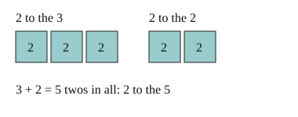

Part of Exponent Rules. Answer in the chat (1: ..., g: c), add sure or guess after any answer, and say done when finished.
Help is now 3: each lesson traces a worked example before the questions.
Last time: which is 2³ × 2²? You said b) 2⁵, and it is.

Writing out every copy gets long fast. But a power just counts copies (notes 1), so two powers of the same base side by side just add their counts, and the base stays the same (notes 2):
aᵐ × aⁿ = aᵐ⁺ⁿ
Worked example: 5² × 5³.
Q1. Write 7³ × 7⁴ as one power.
7^7
Right: 3 + 4 = 7 copies of 7 (notes 2).
Q2. In your own words: why does x² × x⁵ add the exponents?
x^2 is two x's and x^5 is five x's, so multiplied together it is seven x's in a row, x^7
Right: the copies line up, so their counts add (notes 2).
Q3. Jo says 3² × 3³ = 9⁵. What is wrong?
the base stays 3, you only add how many 3s there are, so it is 3^5 not 9^5
Right: only the counts add, the base stays 3 (notes 2).
You can now multiply powers of the same base.
Which is (2³)²?
b (guess)